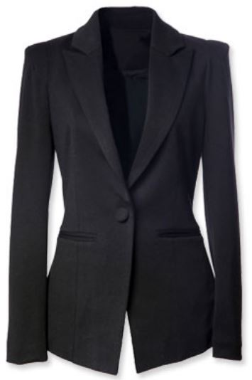

|

Blazer de un botón a la cintura. Descripción:
Blazer de tres botones en filas rectas y
voladas en los hombros, ideal para crear
más volumen en la parte superior.
|
Blazer cruzado con botones laterales. Descripción:
Blazer cruzado con botones laterales. Ideal para mujeres con poco busto.
|
Blazer sin botones y sin solapa. Descripción:
Ideal para mujeres altas y delgadas.
|
Blazer de tres botones en filas rectas y voladas en los hombros. Descripción:
ideal para crear más volumen en la parte superior.
|

La clásica camisa blanca.
Este tipo de blusa es ideal para tu entrevista universitaria,
exposiciones o primera entrevista de trabajo. Da un toque de
formalidad casi en automático y te hace lucir más seria.
|
bodysuit
Lo más seguro es que tu alimentación y horarios también cambien.
Este desequilibrio puede agregarte kilitos no deseados, por eso un
bodysuit para tus días de inflamación es perfecto.
|
Blusa tipo bralette
Seguro te preguntarás ¿Para qué? Pues este tipo de blusa da un toque juvenil.
Te será útil en esos días que te levantas nostálgica o que sientes que pierdes tu juventud.
|
Crop top
Al igual que la blusa pasada, te quita años de encima.
La diferencia es que el crop top puede ser más largo,
con mangas o como te guste.
|
|
Bolso Bowling
Bolso semicuadrado con formas redondeadas y base plana.
Suele llevarse de las asas por el antebrazo, aunque muchos de ellos tienen
también asa larga para poder llevarlo de otras formas.
Aunque los bolsos bowling suelen ser grandes también hay versiones mini. |
Bolso doctor
Rígido y con asas cortas, de ahí su nombre, por su gran parecido
con el maletín de un doctor.
|
Bolso Flap
Esos bolsos que tienen una enorme solapa que lo cubren entero o
al menos hasta la mitad.
|

Bolso hobo
Bolso que se caracteriza por su forma creciente (de arriba abajo).
Suele ser de materiales flexibles y cuenta con asa o correa para poder llevarlo al hombro.
|
|
Botines Chelsea
Son aquellos botines de tipo masculino. Es la mejor opción en tipo de zapatos
para un look casual. Quedan increíblemente bien al usarlos con jeans o faldas
dándote un look relajado. Ideales para días de lluvia, sean estos fríos o calurosos.
Úsalos para salidas de día o amigas o para pasear los fines de semana, ir a conciertos o
cuándo estés mucho tiempo parada o caminando.
|
Zapatos Tipo Oxford
Son el tipo de zapatos de moda del momento. Masculinos y formales al mismo tiempo.
Son la opción perfecta para ir a la oficina y sentirte cómoda al viajar o caminar.
Como también para usarlos si tenes que tomarte un vuelo de muchas horas. Evitar en
aquellos eventos formales. Úsalos con pantalones negros, remeras básicas y blazzer.
|
Sandalias sin tacón
Conocidas también con el nombre de chatas, son el calzado correcto para tus
faldas y shorts de jeans. Son el punto medio entre lo formal e informal. Puedes
combinarlas con cualquier prenda de tu armario para paseo en el día. Hay muchas
variantes de este tipo de zapatos, tentate y úsalos esta temporada.
|
Wedges
Son los populares tacones corridos. Totalmente cómodos por no dejar espacio
entre el talón y el apoyo de los dedos del pie. Dan mayo estabilidad y seguridad
al caminarlos. Ideales para temporadas de mucho calor, ya que son un calzado
fresco para soportar las altas temperaturas. Se recomienda utilizarlo en looks más
informales cómo para ir a trabajar todos los días o en salidas de fin de semana.
Combínalos con jeans o pantalones para un look más desenfrenado. También pueden
armonizar con faldas para un look más primaveral. o bien, atrévete a usarlas con calzas.
|
|
Jeans anchos
Los pantalones de mezclilla anchos seguirán en auge (por mucho tiempo, esperemos).
Es una tendencia que toma en dirección hacia siluetas más relajadas y voluminosas,
como también vimos en Chanel. Su mejor acompañante es el tiro alto, a la cintura;
algunos ceñidos a la cadera, otros completamente sin hacerse a la figura de tu cuerpo.
Un estilo muy retro, que mira a los años 70, pero que a diferencia de aquella época no
serán necesarias las plataformas para lucirlos a la perfección, ya que los de hoy en día
terminan a la altura del tobillo o un poco antes de este.
|
Jeans en azul clásico
Los jeans, como verán en esta selección de imágenes, y bajo ese mismo concepto de volver a
los inicios, retornan a ese tono de azul que caracteriza a la tela de mezclilla. Ese que se
ve solo un poco desteñido, no añil, más un azul de tono claro y medio. Apuntan a un estilo
más relajado, si se pudiera decir, puesto que los más oscuros apuntan algo más formal y
nocturno, pero estos igualmente no pierden su elegancia. Pero más importante aún, su
atemporalidad. Línea que conduce las venideras tendencias de 2021.
|
Jeans con parches
Deconstruir para construir, de esto va este estilo. Es como si tomaras diferentes
retazos de jeans y los juntarás en uno solo que tendrá lo mejor de ambos mundos.
En este desfile Resort de Dior vivimos una nostalgia hacia los años 70 y no solo
con estos vaqueros, sino también con el resto de piezas y estilismos. Manera que
se une en la línea de prédica que invita a no crear nuevos jeans, sino trabajar
con el material existente para no perjudicar mucho más el ambiente. Conseguirás
unos nuevo jeans y mantendrás en pie tu consciencia medioambiental.
|
Jeans rectos
El guiño a los años 90 lo encontramos en los jeans rectos. Este fue el estilo
inicial que dio nacimiento a esta prenda hace dos siglos pero que, como clásico
al fin y al cabo, ha sido reinterpretado en más de una ocasión, esta es una de
ellas, así como en el corte cigarette. Su bota recta y tiro alto, los hacen favorecedores
para prácticamente todo tipo de figuras, que serán por demás estilizadas. Tienen un
atractivo atemporal que, si todavía no están en tu fondo de armario, deberías de
incluirlos ya mismo.
|
|
Cintura alta.
Un poco más abajo del anterior y en la parte alta de la cintura,
por encima del ombligo, este corte favorece casi igual que el anterior,
ya que disimula las caderas y reparte las proporciones de tu cuerpo.
|

Corte recto.
Ideal para las mujeres con forma de uve, cuyos hombros superan la
anchura de su cintura, ya que desvía la atención con su forma tubular (de tubo).
|
Corte Imperio
Si tienes caderas anchas o no quieres que se fijen en tu cintura, el corte
imperio es para ti, ya que incide justo debajo del pecho y realza el busto
alargando la figura.
|
Vestido Tubo
A mitad de camino entre el corte recto y la cintura alta, el vestido tubo
rescatará la importancia de tu cintura de forma elegante y entallada y
respaldará la sensualidad de tus curvas.
|